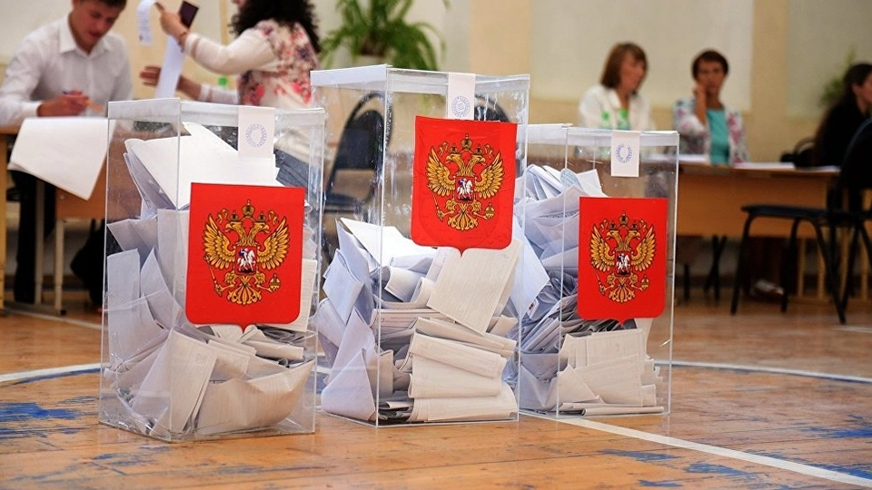

Блокчейн в голосовании
Блокчейн в голосованииБлокчейн-технологии предлагают инновационные решения для проведения выборов, обеспечивая безопасность, прозрачность и достоверность голосования. Применение блокчейна для проведения электронных выборовБлокчейн может использоваться для организации электронных выборов, позволяя избирателям голосовать удаленно и безопасно. Как блокчейн обеспечивает честность голосованияТехнология блокчейн гарантирует честность выборов благодаря своей децентрализованной природе. Каждый голос становится частью неизменяемой цепочки. Преимущества: децентрализация, невозможность подделки результатовОсновные преимущества использования блокчейна включают:
Текущие проекты и пилотные программыСуществует несколько проектов, использующих блокчейн для голосования в различных странах. Потенциальные проблемы и решенияПроблемы включают безопасность сети, принятие технологии и юридические аспекты.
|
 |